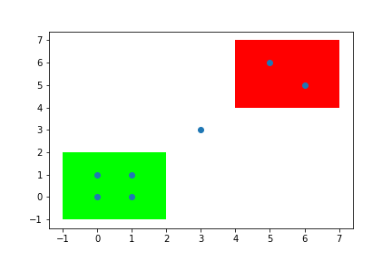

空间关系运算¶
Arctern 支持对几何体对象索引后, 批量地对几何体进行空间关系运算（目前仅支持 GeoSeries.within 方法，类似于 SQL 的 Join）。
within_which(left, right)¶
运算逻辑¶
对
right中包含的几何体使用 RTree 进行索引。对
left中的每一个几何体left[i]，从索引中查找出满足within(left[i], right[j])条件的几何体right[j]，并记录其下标j。
返回结果¶
若找到多个满足上述条件的
right[j]，则返回任意一个j。否则，返回
pandas.NA。
示例¶
我们将图中的绿色矩形命名为 polygons[0]、红色矩形命名为 polygons[1]。使用 within_which 方法判断图中各点（points）是否位于这两个矩形内。
左下的四个点在绿色矩形中，因此这四个点对应的返回值为 0。
右上的两个点在红色矩形中，因此对应返回值为 1。
中间的点不在任何一个矩形中，因此对应返回值为
<NA>。

>>> from arctern import within_which
>>> from arctern import GeoSeries
>>> points = GeoSeries(["Point(0 0)","Point(1 0)","Point(0 1)","Point(1 1)", "Point(3 3)","Point(5 5)","Point(5 6)"])
>>> polygons = GeoSeries(["Polygon((-1 -1, 2 -1, 2 2, -1 2, -1 -1))", "Polygon((4 4, 7 4, 7 7, 4 7, 4 4))"])
>>> within_which(points, polygons)
0 0
1 0
2 0
3 0
4 <NA>
5 1
6 1
dtype: object